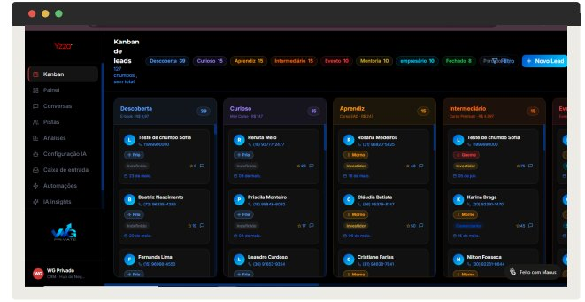

CRM
Estruturação e implantação de CRM, com a Yzza organizando cada contato automaticamente do primeiro contato até o pós-venda.
CRM não é planilha bonita. É rotina de vendas que não deixa ninguém escapar.
CRM (Customer Relationship Management) é o sistema que organiza cada contato do seu negócio com clientes e possíveis clientes: quem já foi abordado, em que etapa da negociação está, o que falta pra fechar e quem precisa de um retorno hoje. Sem ele, essa informação vive na cabeça de cada vendedor ou perdida em conversa de WhatsApp, e o negócio perde visibilidade (e vendas) assim que alguém esquece de responder.
As etapas que todo contato percorre
Curioso → Negociação → Venda → Pós-venda. Cada contato tem um lugar certo no processo, e fica visível pra liderança em que etapa cada oportunidade está travada.
A maioria das vendas se perde aqui
Na prática, grande parte das vendas não deixa de fechar por preço ou produto: deixa de fechar porque ninguém voltou a falar com o contato na hora certa. Retomar contato no momento certo é o que transforma interesse em contrato assinado.
O que não está no CRM, não existe pro negócio
Sem CRM, a informação vive na cabeça do vendedor: quando ele sai da empresa, o histórico do cliente sai junto. Com CRM, o processo e o relacionamento pertencem ao negócio, não à pessoa.
A Yzza faz o primeiro filtro por você
A Yzza responde e qualifica o contato antes mesmo dele chegar a um vendedor humano, garantindo que ninguém fique esperando resposta enquanto decide comprar com o concorrente.
Ferramenta e método, não só planilha.
Montamos o processo de vendas, cadastramos as oportunidades e implantamos o CRM, com rotina de acompanhamento pro time comercial não perder contato pelo caminho.
Yzza: a vendedora digital que nunca dorme
A Yzza, plataforma do nosso próprio ecossistema, é uma vendedora digital com IA que responde e qualifica contatos 24 horas por dia, e organiza cada um automaticamente nas etapas do processo (Curioso, Negociação, Venda e Pós-venda), sem depender de alguém alimentar o CRM na mão. Ela ainda manda esses dados de volta pro Meta e o Google, deixando os próprios anúncios mais inteligentes a cada ciclo.
Resultado que a gente prefere mostrar do que prometer.
Valor médio de R$ 323 mil por venda, com o processo e o CRM garantindo que nenhuma oportunidade esfria no meio do caminho.